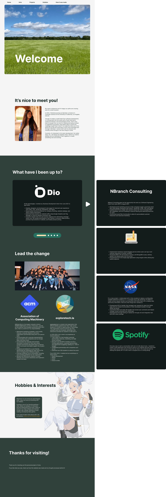
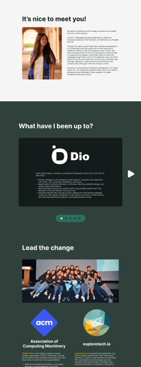
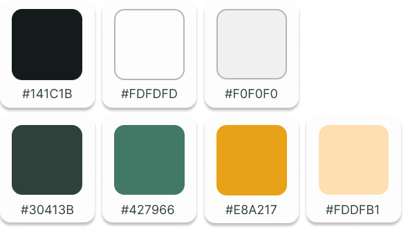

I initially wanted to create a website to refresh my skills in HTML, CSS, and Javascript but also because there's
just so much to people than a single page of information. I wanted to humanize the process of getting to know me just a little bit.
For the overall aesthetics, I wanted to reflect a relaxed, calmer vibe that reflects a lot of the music that I listen to. The flower
headers and nature aspects were largely inspired by a music mega mix video that had a lot of hard cuts of nature scenes.
Here is a list of the goals that I set out for myself before building this page:
Create a website that represents me
Convey story and user interaction through movement. Website should be intuitive as most UI should be (like gaming menus)
Learn how to be inspired by others works (music, magazine layouts, other websites, gaming, etc)
Complete full track of ideation to implementation
Wireframing
In order to map out how I wanted the website to look, I created low-fidelity wireframes and mock-ups for each page to guide me during
the implementation process. To save time for myself, I chose to opt out of creating a super detailed prototype but in a more real development
environment, it would be important to convey more detail to communicate ideas better.
Low-fidelity wireframe: a sketch of simple boxes and text to convey the basic concepts, layout, and functionality
to be shown on the screen.
Mock-ups: An image that builds off initial wireframes to portray colors, fonts, images, and other styling details.
This should portray how the final product will look.
Prototype: An interactive simulation that demonstrates how different elements of a website interact with one another
and how smooth the navigation experience will be.
Home Page
Low-fidelity
Mock-up

Color Picking
One way designers can strive to keep tech accessible is through color. Websites should pass the web accessibility color contrast ratio suggested by WCAG2.2. In addition,
designers should simulate color blindness filters on their designs to better understand how others may view their work.

Normal Vision
How people with normal vision views the world. In the eyes, all three color cones (red, green, blue) work together to distinguish thousands of color.

Building & Deploying
Once the design phase was finished, it was time to move onto the development stage. I spent a couple of days refreshing my knowledge on HTML, CSS, and Javascript through reading
guides, such as Interneting is Hard and MDN docs, and working through small examples. After gaining more confidence I dove right into building this project since learning is best done by just doing.
Everything on this website was built using HTML, CSS, and Javascript. The website was built in VSCode and deployed on Github.
Reflections & Next Steps
Overall, creating this whole project was a valuable learning experience. Going through the motions of designing a website to deploying a fully interactable version was a process full of learning, adjusting, and trying.
What did I learn? What would I do differently?
Better workflow: I would definitely spend a lot more time fleshing out the website design better before jumping into development. I got a little too excited jumping into developing that I had to constantly readjust and re-implement things due to poor design planning.
Inspiration from others: I learned that simply just viewing other websites and trying to picture what it took to implement it sections at a time is a great way to get inspiration and a visual representation of your end goal. The world is really your oyster.
So, what's next?
Backend Projects: One thing I plan to include is a small project I'm working on where Spotify users who visit the page can compare how similar their music tastes are to mine.
Responsive Design: The website is painfully lacking responsive design, which means it won't display equally well on smaller screens and currently works best when viewed in full screen browser on a monitor. It would be nice to create a overall better viewing experience.
Constant Improvement: I hope to improve and study the interaction of frontend and backend by creating more projects and analyzing the work of others.